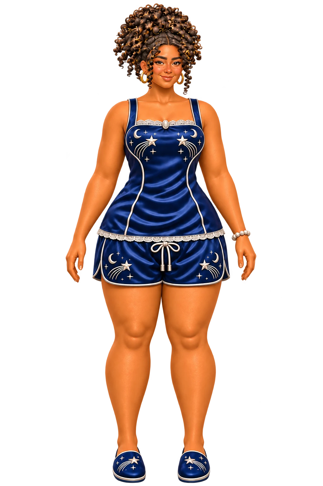
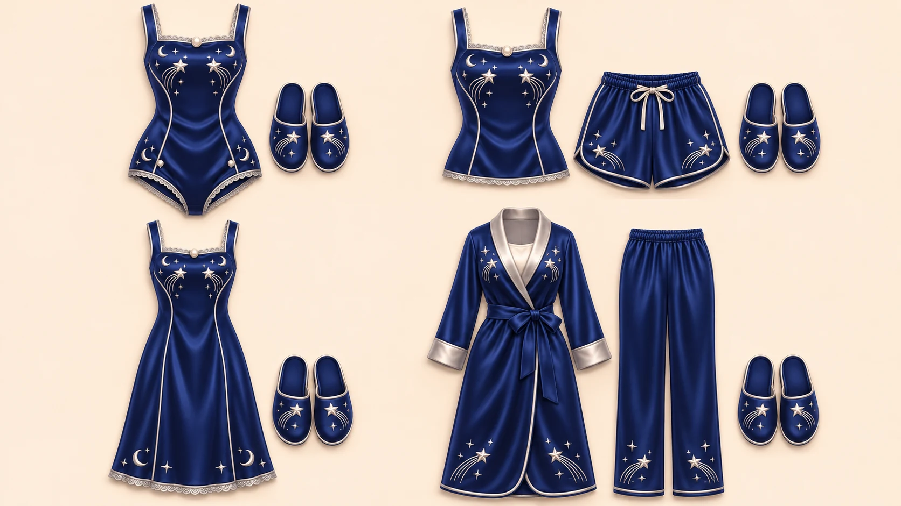
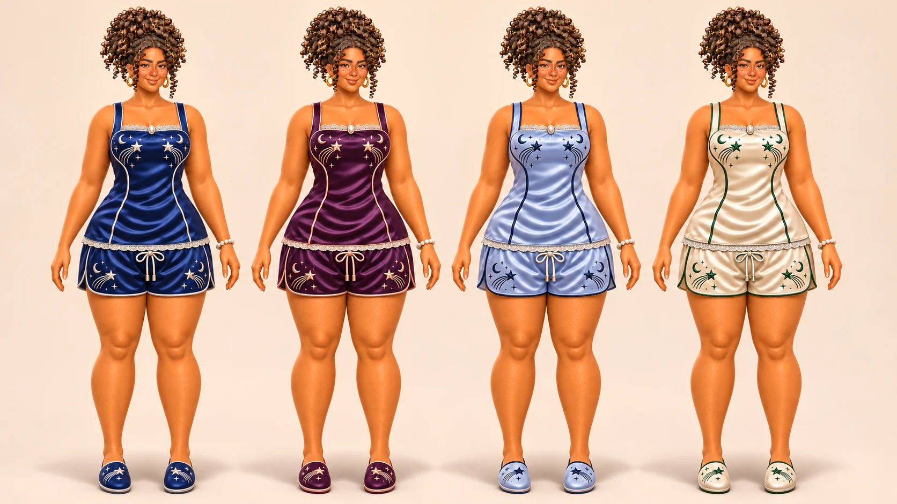

Wardrobe notebook · Concept art
Midnight,
with a little starlight.
Navy satin, silver piping and a trail of shooting stars bring this loungewear collection together. The same details carry from a camisole and shorts to a long nightdress and a robe.
These are illustrated clothing and character concepts, not in-game captures or finished custom-content downloads.
Explore the designs ↓
An evening in
The outfit has
somewhere to be.
A cup of tea, warm lamplight and moonlight through the windows. Here, the navy robe and short pajama set share the same silver-star motif.
 Explore the full artwork ↗
Explore the full artwork ↗Four silhouettes
A shared motif.
Different ways to unwind.
Crescent moons, trailing stars and pale edging repeat across the garments and slippers. The silhouettes change, but the collection keeps its navy-and-silver palette.

Explore the full artwork ↗- 01 One-piece
- 02 Camisole & shorts
- 03 Long nightdress
- 04 Robe & trousers
One look, four palettes
A little change
in the night sky.
The camisole, shorts and slippers stay together while navy gives way to plum, periwinkle and cream. Keeping the pose and outfit consistent makes the color changes easier to compare.
Choose a color above, or swipe across to compare the outfits.

Color and clothing studies only. For actual game captures, visit the original character household.
Meet the real in-game characters →